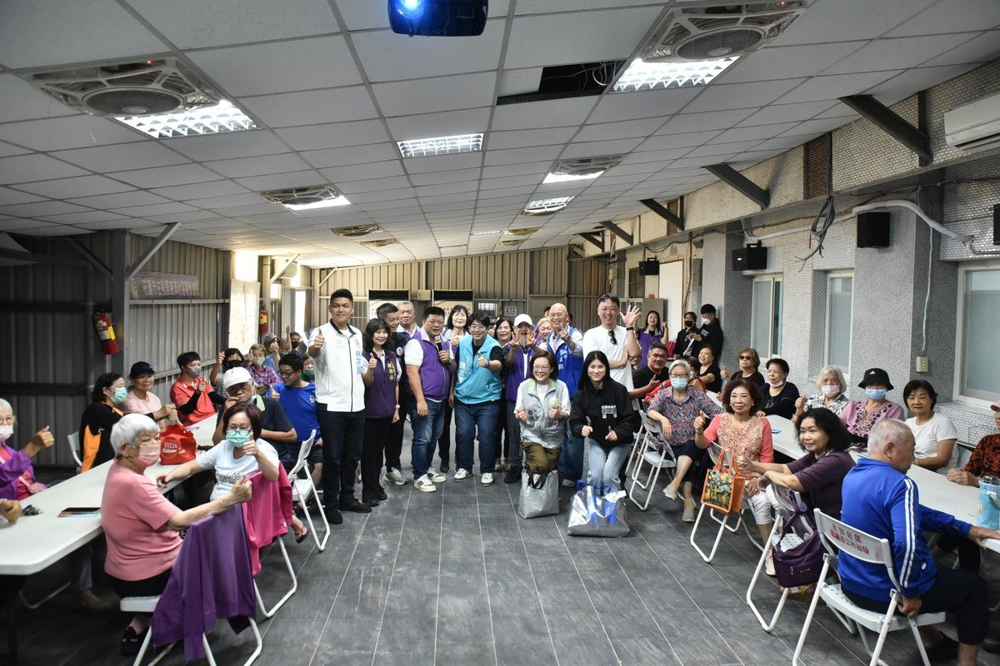

花蓮主和活動中心耐震升級啟用 魏嘉彥攜手慈濟造友善家園

可樂電子報小編/編輯
花蓮市主和里活動中心歷經嚴謹的建築結構耐震補強與室內環境全面整修工程，於10月31日上午盛大舉行完工啟用典禮。花蓮市長魏嘉彥親自出席主持，與主和社區發展協會理事長黃義宏、地方仕紳及熱情鄉親共同焚香祈福、見證歷史時刻。這棟陪伴在地居民數十載的重要集會場所，在市公所與縣府團隊攜手挹注資源下脫胎換骨，不僅大幅強化建物防震韌性，更營造明亮、通風且符合無障礙規範的溫馨交流空間，正式開啟社區照顧與睦鄰生活的新篇章。

位於花蓮市廣東街146號的主和里活動中心，長期以來扮演凝聚鄰里情感、推動長者福祉與社區營造的核心樞紐，內部設有主和里辦公處、社區發展協會以及慈濟主和社區關懷據點。考量建物歷經歲月洗禮與花蓮頻繁地震考驗，市公所為守護鄉親公共安全，特別由建設課專責辦理結構耐震補強工程，日前已高標準順利通過嚴格驗收。這項紮實的硬體加固工程，徹底解決老舊建物結構隱憂，讓每位走進活動中心的里民在參與日常課程與文康活動時，皆能擁有最踏實的安全保障。

除了結構主體的安全提升，花蓮市公所積極向花蓮縣政府爭取經費挹注，成功獲得約285萬元專款補助，全方位推動室內裝修美化與機能優化工程。整建項目針對既有老舊水電管線、地坪與天花板設施徹底翻修，並大幅改善室內自然採光與空氣對流配置；更重要的是全面導入友善無障礙設計，包含增設專用電梯設備、標準消防救災器材與常設健康量測站點，徹底消弭行動不便長輩的上下樓門檻，讓不同年齡層的居民皆能享有平權便利、舒適寬敞的公共使用環境。

花蓮市長魏嘉彥致詞時感性表示，活動中心絕非僅是一棟冰冷的鋼筋水泥建築，而是凝聚街坊鄰里深厚情感、陪伴銀髮長輩安享晚年的重要溫暖堡壘。他特別由衷感謝花蓮縣政府在經費上的鼎力相助，以及主和里長、社區發展協會與地方各界多年來的堅持投入，才讓整建工程能圓滿如期落成。魏市長強調，市公所團隊最大的期盼，就是讓每一位踏入中心的鄉親長輩，都能深刻感受到如同回到家一般的自在與溫馨，未來市公所也將持續盤點全市各里集會空間，讓生活環境更加安心便利。

主和社區發展協會理事長黃義宏表示，主和社區能迎來今日完善現代化的活動空間，是凝聚歷任公所首長與地方各界多年持續努力的心血結晶。黃義宏指出，早在魏嘉賢擔任市長期間，市公所便積極協助爭取各項硬體改善資源；魏嘉彥市長接棒後更是不遺餘力，親自協調並釐清整建過程中繁複的法規障礙，促成地坪平整度與動線優化順利完成。看著活動中心煥然一新、機能倍增，地方居民無不感到無比振奮，對公所團隊長期以來的深耕陪伴與用心負責，致上最高謝意。
值得一提的是，主和里活動中心緊密結合慈濟主和社區關懷據點，啟用後將常態化提供長者訪視關懷、健康促進課程以及共餐照護服務。透過熱心志工團隊的溫暖陪伴，積極鼓勵銀髮長輩走出家門、融入社群互動，有效預防延緩失能，落實在地老化與共好照顧的幸福藍圖。魏嘉彥市長重申，市公所將秉持以人為本的施政理念，持續推動老舊公共設施轉型升級，讓各里活動據點發揮最大社會效益，打造老有所依、鄰里互助且充滿幸福感的友善花蓮市。
📸 更多現場紀實影像